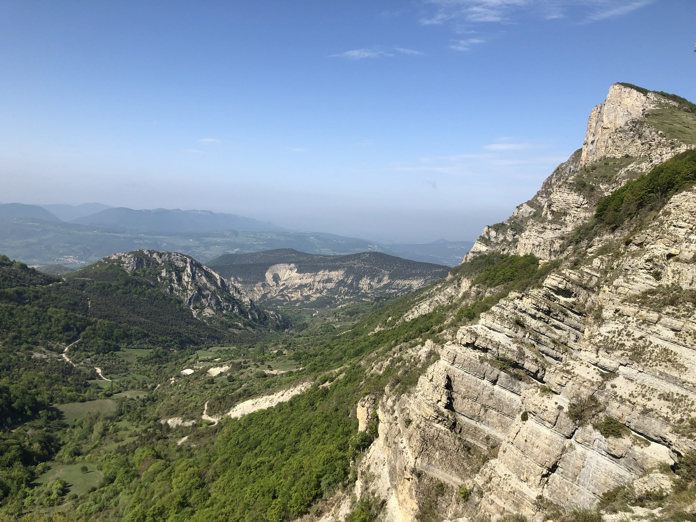

Les Trois Becs, de iconische toppen van het Forêt de Saoû, kijken uit over een enorme hooggelegen synclinaal, een van de grootste van Frankrijk. Op ongeveer 1 uur van Les Cabritas is het een van de populairste wandelingen van de Drôme.

Drie toppen, drie sferen
Roche Courbe, de eerste top, ligt het dichtst bij het vertrekpunt en biedt al uitzicht over het Forêt de Saoû beneden. Le Signal, de tweede top, geeft het weidste panorama: bij helder weer ziet u in het zuiden de Mont Ventoux en in het noorden de kammen van de Vercors. Le Veyou, het hoogste punt van het massief, biedt een intiemer uitzicht richting de Diois en de eerste uitlopers van de Baronnies.
Een pittige maar toegankelijke wandeling
Het klassieke vertrekpunt is de Col de la Chaudière, bereikbaar via de D135 tussen Saillans en Bourdeaux; een alternatieve route vertrekt vanaf de parkeerplaats van het Forêt de Saoû via de Pas des Auberts. Reken op zo'n 1.000 meter hoogteverschil voor de volledige lus: een pittige wandeling, maar zeker haalbaar dankzij de zeer duidelijke markering. De klassieke lus heeft geen technische passages, ook al blijft de kam op sommige plekken open; de variant via de Pas des Auberts is uitgerust met leuningen en kabels.
Goed om te weten voor uw bezoek
Neem goede wandelschoenen en veel water mee. Een van de toegangsroutes is van 25 mei tot 15 juli gesloten om de plaatselijke fauna te beschermen. Vertrek in de zomer bij voorkeur vroeg in de ochtend om de hitte te vermijden, en neem een picknick mee om op de top te eten, met uitzicht.
Praktische informatie vanuit Les Cabritas
- Afstand vanaf Flaviac: ongeveer 1 uur rijden
- Beste periode: lente en herfst (toegang deels gesloten van 25 mei tot 15 juli)
- Ideaal voor: wandelaars, weidse uitzichten, een actieve dag
Zin om Les Trois Becs te ontdekken vanuit uw vakantiehuis in de Ardèche?
Les Cabritas verwelkomt u in Flaviac, in het hart van de Ardèche, voor een comfortabel verblijf met privézwembad, vlak bij de mooiste plekken van de streek.
Beschikbaarheid bekijken